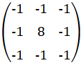
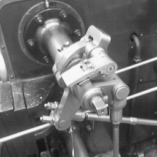
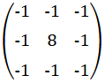
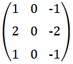
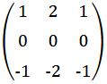
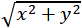
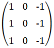
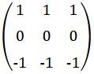
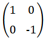
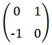

Point Detection
Below is an example of point detection.


Below is an example of point detection.

Below is an example of edge detection using Sobel, Prewitt, and Roberts filter.
Sobel filter uses two kernels to calculate derivatives of each pixel: horizontal and vertical. Then, we combine those results to get magnitude.



Prewitt filter acts like Sobel filter, but does not focus on the middle.


Roberts filter uses diagonals instead of x and y axis.


Image used: "Valve original (1)" by Simpsons contributor (CC BY-SA 3.0)